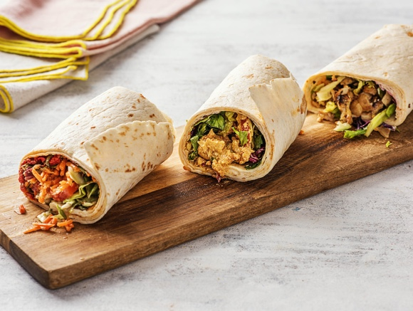
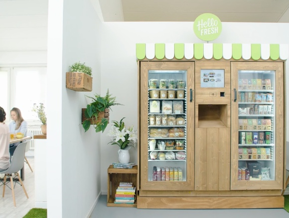

What & Why
Hello Fresh developed a novel, fast-growing fresh convenience food concept: Hello Fresh Go provides vending machine fridges with fresh and healthy meals and snacks. Of course, the daily, efficient restocking and control of these fridges is a key factor for Hello Fresh.
 The Challenge
The novelty of the logistics needed, that required immense flexibility and a joint development and gradual definition of the actual service: daily varying deliveries, the restocking of the fridges on top of the actual transportation, taking stock and marking available products, as well as the disposal of products that are out of date. In addition, flexible commissioning is needed that adapts to daily requirements: Delivery amounts change daily within existing fridges and due to the strong growth.
Usual logistics providers are unable or unwilling to take the challenge or suggest expensive and inefficient solutions. Fliit enthusiastically responded as one of the first ones with an individualized offer.
Our Solution
Based on out zero asset model we could choose and adapt the right carrier on a daily basis. Thereby we created a specialized logistics solution that is flexible, reliable and allows for all necessary additional services as nobody else could have done. The flexibility of the model is essential and unique until today and immensely contributed to the successful rollout of Hello Fresh Go.
- fliit takes care of driver training and even joined the drivers on their tours to ensure that standards of Hello Fresh Go are met.
- Jointly, delivery processes were improved continually, especially with the help of the diverse and exact data delivered by fliit.
- Thereby, Hello Fresh Go could increase the efficiency of its processes as well as the accuracy of its forecasts.
- The documentation and controls by fliit also make quality and complaint management a lot easier for Hello Fresh.
- Regular meetings help to quickly understand and fulfill new needs and react quickly and flexibly.
Fliit takes complete care of Hello Fresh Go’s logistics so they can focus on their core business.